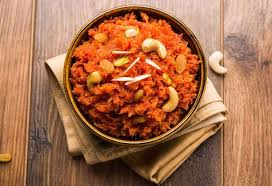

Gajar Ka Halwa
Ingredients:
- 500 grams carrots, grated
- 500 ml full-fat milk
- 1 cup sugar
- 1/4 cup ghee (clarified butter)
- 1/4 cup chopped nuts (cashews, almonds, and pistachios)
- 1/2 teaspoon cardamom powder
- Saffron strands for garnish (optional)
Instructions:
1. In a heavy-bottomed pan, heat ghee and add the grated carrots. Sauté them on low heat until they turn soft and release their aroma.
2. Add the milk and simmer, stirring occasionally, until the carrots absorb the milk and the mixture thickens.
3. Stir in the sugar and continue to cook until the halwa reaches a thick, pudding-like consistency.
4. Add the cardamom powder and chopped nuts, and mix well.
5. Garnish with saffron strands (if using).
6. Serve your Gajar Ka Halwa warm, garnished with more nuts if desired.
Indulge in the warmth of homemade Gajar Ka Halwa!